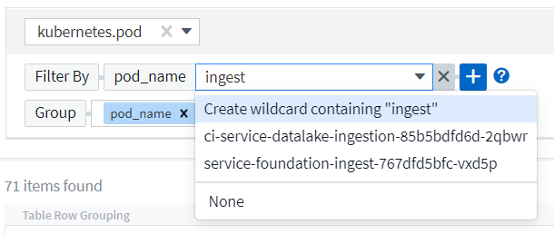
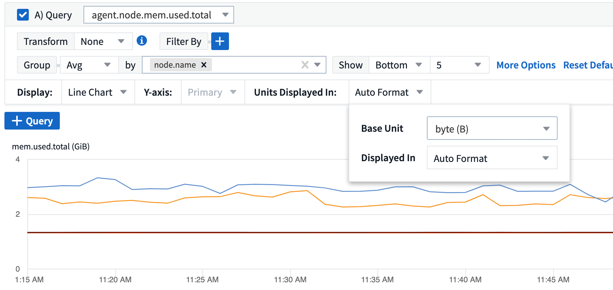

Demander de modifier un document
Demander de modifier un document Modifier sur GitHub
Modifier sur GitHub Guide des contributeurs
Guide des contributeursFonctionnalités du tableau de bord
Contributeurs
- Dénomination des widgets
- Positionnement et taille des widgets
- Duplication d’un widget
- Affichage des légendes du widget
- Transformation des mesures
- Requêtes et filtres du widget du tableau de bord
- Regroupement et agrégation
- Affichage des résultats supérieurs/inférieurs
- Regroupement dans un widget de tableau
- Sélecteur de plage horaire du tableau de bord
- Remplacement de l’heure du tableau de bord dans des widgets individuels
- Axes principal et secondaire
- Expressions dans les widgets
- Variables
- Formatage des widgets de jauge
- Formatage du widget à valeur unique
- Choix de l’unité pour l’affichage des données
- Mode TV et actualisation automatique
- Groupes de tableaux de bord
- Épinglez vos tableaux de bord favoris
- Thème sombre
- Interpolation de l’histogramme linéaire
Les tableaux de bord et les widgets offrent une grande flexibilité dans le mode d’affichage des données. Voici quelques concepts qui vous aideront à tirer le meilleur parti de vos tableaux de bord personnalisés.
Dénomination des widgets
Les widgets sont automatiquement nommés en fonction de l’objet, de la mesure ou de l’attribut sélectionné pour la première requête de widget. Si vous choisissez également un regroupement pour le widget, les attributs « Grouper par » sont inclus dans la dénomination automatique (méthode d’agrégation et métrique).

La sélection d’un nouvel objet ou d’un attribut de regroupement met à jour le nom automatique.
Si vous ne souhaitez pas utiliser le nom automatique du widget, vous pouvez simplement entrer un nouveau nom.
Positionnement et taille des widgets
Tous les widgets de tableau de bord peuvent être positionnés et dimensionnés en fonction de vos besoins pour chaque tableau de bord spécifique.
Duplication d’un widget
En mode Tableau de bord, cliquez sur le menu du widget et sélectionnez Dupliquer. L’éditeur de widget est lancé, rempli avec la configuration du widget original et avec un suffixe "copie" dans le nom du widget. Vous pouvez facilement apporter les modifications nécessaires et enregistrer le nouveau widget. Le widget sera placé au bas de votre tableau de bord et vous pouvez le positionner selon les besoins. N’oubliez pas d’enregistrer votre tableau de bord lorsque toutes les modifications sont terminées.

Affichage des légendes du widget
La plupart des widgets des tableaux de bord peuvent être affichés avec ou sans légendes. Les légendes des widgets peuvent être activées ou désactivées sur un tableau de bord à l’aide de l’une des méthodes suivantes :
-
Lorsque vous affichez le tableau de bord, cliquez sur le bouton Options du widget et sélectionnez Afficher légendes dans le menu.
Au fur et à mesure que les données affichées dans le widget changent, la légende de ce widget est mise à jour dynamiquement.
Lorsque des légendes sont affichées, si la page d’accueil de la ressource indiquée par la légende peut être navigué vers, la légende s’affiche sous forme de lien vers cette page de ressources. Si la légende affiche « tous », cliquer sur le lien pour afficher une page de requête correspondant à la première requête dans le widget.
Transformation des mesures
Cloud Insights propose différentes options Transform pour certaines métriques dans les widgets (en particulier, les métriques appelées « personnalisé » ou mesures d’intégration, telles que Kubernetes, les données avancées ONTAP, les plug-ins Telegraf, etc.), ce qui vous permet d’afficher les données de différentes façons. Lorsque vous ajoutez des mesures transformables à un widget, une liste déroulante vous propose les options de transformation suivantes :
- Aucune
-
Les données sont affichées en l’état, sans manipulation.
- Taux
-
Valeur actuelle divisée par la plage de temps depuis l’observation précédente.
- Cumulatifs
-
Accumulation de la somme des valeurs précédentes et de la valeur actuelle.
- Delta
-
Différence entre la valeur d’observation précédente et la valeur actuelle.
- Taux delta
-
Valeur Delta divisée par l’intervalle de temps depuis l’observation précédente.
- Taux cumulé
-
Valeur cumulée divisée par l’intervalle de temps depuis l’observation précédente.
Notez que la transformation des mesures ne modifie pas les données sous-jacentes, mais uniquement la façon dont elles sont affichées.
Requêtes et filtres du widget du tableau de bord
Requêtes
La requête dans un widget de tableau de bord est un outil puissant de gestion de l’affichage de vos données. Voici quelques points à noter sur les requêtes de widget.
Certains widgets peuvent avoir jusqu’à cinq requêtes. Chaque requête trace son propre ensemble de lignes ou de graphiques dans le widget. La configuration de l’agrégation, du regroupement, des résultats supérieurs/inférieurs, etc. Sur une requête n’affecte pas les autres requêtes du widget.
Vous pouvez cliquer sur l’icône œil pour masquer temporairement une requête. L’affichage du widget est automatiquement mis à jour lorsque vous masquez ou affichez une requête. Cela vous permet de vérifier les données affichées pour les requêtes individuelles au fur et à mesure de la création de votre widget.
Les types de widget suivants peuvent avoir plusieurs requêtes :
-
Graphique de zone
-
Graphique de zone empilée
-
Graphique en courbes
-
Graphique de spline
-
Widget à valeur unique
Les types de widget restants ne peuvent avoir qu’une seule requête :
-
Tableau
-
Graphique à barres
-
Tracé de zone
-
Tracé de dispersion
Filtrage dans les requêtes widget du tableau de bord
Voici quelques choses que vous pouvez faire pour tirer le meilleur parti de vos filtres.
Filtrage de correspondance exacte
Si vous placez une chaîne de filtre entre deux guillemets, Insight traite tout entre le premier et le dernier devis comme une correspondance exacte. Tous les caractères spéciaux ou opérateurs situés dans les guillemets seront traités comme des littéraux. Par exemple, le filtrage pour "*" renvoie des résultats qui sont un astérisque littéral ; l’astérisque ne sera pas traité comme un caractère générique dans ce cas. Les opérateurs ET, OU, et NON SERONT également traités comme des chaînes littérales lorsqu’ils sont entourés de guillemets doubles.
Vous pouvez utiliser des filtres de correspondance exacte pour trouver des ressources spécifiques, par exemple nom d’hôte. Si vous voulez trouver uniquement le nom d’hôte « marketing » mais exclure « marketing01 », « marketing-boston », etc., il suffit de placer le nom « marketing » dans des guillemets doubles.
Caractères génériques et expressions
Lorsque vous filtrez des valeurs de texte ou de liste dans des requêtes ou des widgets de tableau de bord, lorsque vous commencez à taper, vous avez la possibilité de créer un filtre générique basé sur le texte en cours. Si vous sélectionnez cette option, tous les résultats correspondant à l’expression de caractère générique seront résélectionnés. Vous pouvez également créer expressions à l’aide DE NOT ou OU, ou sélectionner l’option "aucun" pour filtrer les valeurs nulles dans le champ.

Filtres basés sur des caractères génériques ou des expressions (par exemple NON, OU « aucun », etc.) s’affiche en bleu foncé dans le champ du filtre. Les éléments que vous sélectionnez directement dans la liste s’affichent en bleu clair.

Notez que le filtrage des caractères génériques et des expressions fonctionne avec du texte ou des listes, mais pas avec des valeurs numériques, des dates ou des valeurs booléennes.
Filtrage avancé du texte avec des suggestions de type avance
Lorsque vous sélectionnez une ou plusieurs valeurs pour un champ, les autres filtres de cette requête affichent les valeurs pertinentes pour ce filtre. Par exemple, lors de la définition d’un filtre pour un objet spécifique Name, le champ à filtrer pour Model affiche uniquement les valeurs pertinentes pour ce nom d’objet.
Notez que seuls les filtres de texte affichent des suggestions contextuelles de type à l’avance. La date, Enum (liste), etc. N’affichera pas de suggestions de type à l’avance. Cela dit, vous pouvez CAN définir un filtre dans un champ Enum (c.-à-d. liste) et avoir d’autres champs de texte à filtrer dans le contexte. Par exemple, la sélection d’une valeur dans un champ Enum comme Data Center, les autres filtres n’affichent que les modèles/noms dans ce centre de données), mais pas l’inverse.
La plage de temps sélectionnée fournit également un contexte pour les données affichées dans les filtres.
Choix des unités de filtre
Lorsque vous saisissez une valeur dans un champ de filtre, vous pouvez sélectionner les unités dans lesquelles afficher les valeurs sur le graphique. Par exemple, vous pouvez filtrer la capacité brute et choisir d’afficher dans le Gio par défaut, ou sélectionner un autre format tel que Tio. Ceci est utile si vous disposez d’un certain nombre de graphiques sur votre tableau de bord affichant les valeurs en Tio et que vous souhaitez que tous vos graphiques affichent des valeurs cohérentes.

Améliorations supplémentaires du filtrage
Les éléments suivants peuvent être utilisés pour affiner davantage vos filtres.
-
Un astérisque vous permet de rechercher tout. Par exemple :
vol*rhel
affiche toutes les ressources commençant par "vol" et se terminant par "rhel".
-
Le point d’interrogation permet de rechercher un nombre spécifique de caractères. Par exemple :
BOS-PRD??-S12
Affiche BOS-PRD12-S12, BOS-PRD13-S12, etc.
-
L’opérateur OU vous permet de spécifier plusieurs entités. Par exemple :
FAS2240 OR CX600 OR FAS3270
identification des nombreux modèles de stockage
-
L’opérateur NOT permet d’exclure du texte des résultats de la recherche. Par exemple :
NOT EMC*
Trouve tout ce qui ne commence pas par « EMC ». Vous pouvez utiliser
NOT *
pour afficher les champs ne contenant aucune valeur.
Identification des objets renvoyés par des requêtes et des filtres
Les objets renvoyés par des requêtes et des filtres ressemblent à ceux affichés dans l’illustration suivante. Les objets avec des « balises » qui leur sont attribués sont des annotations, tandis que les objets sans balises sont des compteurs de performance ou des attributs d’objet.

Regroupement et agrégation
Regroupement (reprise)
Les données affichées dans un widget sont regroupées (parfois appelées « cumulées ») à partir des points de données sous-jacents collectés lors de l’acquisition. Par exemple, si vous avez un widget graphique en lignes qui affiche les IOPS de stockage au fil du temps, il est possible que vous souhaitiez afficher une ligne distincte pour chacun de vos data centers, afin d’obtenir une comparaison rapide. Vous pouvez choisir de regrouper ces données de différentes manières :
-
AVG : affiche chaque ligne comme la moyenne des données sous-jacentes.
-
Max : affiche chaque ligne sous la forme maximum des données sous-jacentes.
-
Min : affiche chaque ligne comme le minimum des données sous-jacentes.
-
Somme : affiche chaque ligne sous la forme sum des données sous-jacentes.
-
Count : affiche un count d’objets qui ont des données déclarées dans la période spécifiée. Vous pouvez choisir la fenêtre de temps entier comme déterminé par la plage de temps du tableau de bord (ou la plage de temps du widget, si elle est définie pour remplacer l’heure du tableau de bord), ou une fenêtre de temps personnalisée que vous sélectionnez.
Pour définir la méthode de regroupement, procédez comme suit.
-
Dans la requête de votre widget, choisissez un type et une mesure de ressource (par exemple Storage) et une mesure (par exemple Performance IOPS Total).
-
Pour Groupe, choisissez une méthode de synthèse (comme AVG) et sélectionnez les attributs ou les métriques à l’aide desquels vous souhaitez synthétiser les données (par exemple Data Center).
Le widget se met automatiquement à jour et affiche les données de chacun de vos data centers.
Vous pouvez également choisir de regrouper tous des données sous-jacentes dans le graphique ou la table. Dans ce cas, vous obtenez une ligne unique pour chaque requête dans le widget, qui affiche la moyenne, min, max, somme ou nombre de la ou des mesures choisies pour toutes les ressources sous-jacentes.
Si vous cliquez sur la légende d’un widget dont les données sont regroupées par "All", une page de requête affiche les résultats de la première requête utilisée dans le widget.
Si vous avez défini un filtre pour la requête, les données sont regroupées en fonction des données filtrées.
Notez que lorsque vous choisissez de regrouper un widget par n’importe quel champ (par exemple, Model), vous devrez toujours filtrer par ce champ pour afficher correctement les données de ce champ sur le graphique ou la table.
Agrégation des données
Vous pouvez aligner davantage vos graphiques de séries chronologiques (ligne, zone, etc.) en regroupant les points de données en compartiments minute, heure ou jour avant que ces données ne soient ensuite regroupées par attribut (si vous le souhaitez). Vous pouvez choisir d’agréger des points de données en fonction de leurs AVG, Max, min ou Sum, ou par le point de données Last collecté au cours de l’intervalle choisi. Pour choisir une méthode d’agrégation, cliquez sur plus d’options dans la section requête du widget.
Un petit intervalle combiné à une longue plage de temps peut entraîner un avertissement « l’intervalle d’agrégation a entraîné un nombre trop important de points de données. » Vous pouvez le voir si vous avez un petit intervalle et augmenter la durée du tableau de bord à 7 jours. Dans ce cas, Insight augmente temporairement l’intervalle d’agrégation jusqu’à ce que vous sélectionniez une période plus petite.
Vous pouvez également agréger les données dans le widget de graphique à barres et à valeur unique.
La plupart des compteurs d’actifs sont regroupés par défaut à AVG. Certains compteurs sont agrégés par défaut à Max, min ou sum. Par exemple, les erreurs de port sont agrégées à sum par défaut, où Storage IOPS agrégat à AVG.
Affichage des résultats supérieurs/inférieurs
Dans un widget graphique, vous pouvez afficher les résultats Haut ou Bas pour les données cumulées et choisir le nombre de résultats affiché dans la liste déroulante. Dans un widget de tableau, vous pouvez trier par colonne.
Haut/bas du widget graphique
Dans un widget graphique, lorsque vous choisissez de regrouper des données par un attribut spécifique, vous avez la possibilité d’afficher les résultats N du haut ou N du bas. Notez que vous ne pouvez pas choisir les résultats supérieurs ou inférieurs lorsque vous choisissez de faire un cumul par attributs All.
Vous pouvez choisir les résultats à afficher en choisissant Haut ou Bas dans le champ Afficher de la requête et en sélectionnant une valeur dans la liste fournie.
Le widget de tableau affiche les entrées
Dans un widget tableau, vous pouvez sélectionner le nombre de résultats affichés dans le tableau des résultats. Vous n’avez pas la possibilité de choisir les résultats supérieurs ou inférieurs car le tableau vous permet de trier les résultats par ordre croissant ou décroissant en fonction d’une colonne à la demande.
Vous pouvez choisir le nombre de résultats à afficher dans la table du tableau de bord en sélectionnant une valeur dans le champ Afficher les entrées de la requête.
Regroupement dans un widget de tableau
Les données d’un widget de tableau peuvent être regroupées par n’importe quel attribut disponible, ce qui vous permet d’afficher une vue d’ensemble de vos données et d’en explorer les données pour plus de détails. Les mesures de la table sont rassemblées pour faciliter l’affichage dans chaque ligne réduite.
Les widgets de tableau vous permettent de regrouper vos données en fonction des attributs que vous avez définis. Par exemple, votre tableau peut afficher les IOPS de stockage totales regroupées en fonction des data centers dans lesquels ces stockages sont actifs. Vous pouvez également afficher un tableau des machines virtuelles regroupées en fonction de l’hyperviseur qui les héberge. Dans la liste, vous pouvez développer chaque groupe pour afficher les ressources de ce groupe.
Le regroupement n’est disponible que dans le type de widget Table.
Exemple de regroupement (avec cumul expliqué)
Les widgets de tableau vous permettent de regrouper les données pour faciliter leur affichage.
Dans cet exemple, nous allons créer un widget de tableau répertoriant toutes les machines virtuelles regroupées par Data Center.
-
Créez ou ouvrez un tableau de bord et ajoutez un widget Table.
-
Sélectionnez Virtual machine comme type d’actif pour ce widget.
-
Cliquez sur le sélecteur de colonne et choisissez Hypervisor name et IOPS - Total.
Ces colonnes sont maintenant affichées dans le tableau.
-
Ignorez toutes les machines virtuelles sans IOPS et incluez uniquement les machines virtuelles pour lesquelles les IOPS totales sont supérieures à 1. Cliquez sur le bouton Filter by [+] et sélectionnez IOPS - Total. Cliquez sur any, et dans le champ de, saisissez 1. Laissez le champ à vide. Appuyez sur entrer sans cliquer sur le champ de filtre pour appliquer le filtre.
Le tableau indique désormais toutes les machines virtuelles dont le nombre total d’IOPS est supérieur ou égal à 1. Notez qu’il n’y a pas de regroupement dans la table. Toutes les VM sont affichées.
-
Cliquez sur le bouton Grouper par [+].
Vous pouvez grouper par n’importe quel attribut ou annotation affiché. Choisissez All pour afficher toutes les machines virtuelles d’un même groupe.
Tout en-tête de colonne pour une mesure de performance affiche un menu "trois points" contenant une option Roll up. La méthode par défaut est AVG. Cela signifie que le nombre indiqué pour le groupe correspond à la moyenne de toutes les IOPS totales indiquées pour chaque machine virtuelle du groupe. Vous pouvez choisir de faire rouler cette colonne vers le haut par AVG, somme, min ou Max. Toutes les colonnes qui contiennent des mesures de performance peuvent être synthétisés individuellement.

-
Cliquez sur All et sélectionnez Hypervisor name.
La liste des machines virtuelles est désormais groupée par hyperviseur. Vous pouvez développer chaque hyperviseur pour afficher les VM hébergées par celui-ci.
-
Cliquez sur Enregistrer pour enregistrer la table dans le tableau de bord. Vous pouvez redimensionner ou déplacer le widget comme vous le souhaitez.
-
Cliquez sur Enregistrer pour enregistrer le tableau de bord.
Synthèse des données de performance
Si vous incluez une colonne pour les données de performances (par exemple, IOPS - Total) dans un widget de tableau, lorsque vous choisissez de regrouper les données, vous pouvez alors choisir une méthode de synthèse pour cette colonne. La méthode de défilement par défaut consiste à afficher la moyenne (avg) des données sous-jacentes de la ligne du groupe. Vous pouvez également choisir d’afficher la somme, le minimum ou le maximum des données.
Sélecteur de plage horaire du tableau de bord
Vous pouvez sélectionner la plage horaire des données de votre tableau de bord. Seules les données relatives à la plage horaire sélectionnée s’affichent dans les widgets du tableau de bord. Vous pouvez sélectionner l’une des plages de temps suivantes :
-
Dernières 15 minutes
-
Dernières 30 minutes
-
Dernières 60 minutes
-
Dernières 2 heures
-
Les 3 dernières heures (il s’agit de la valeur par défaut)
-
Dernières 6 heures
-
Dernières 12 heures
-
Dernières 24 heures
-
2 derniers jours
-
3 derniers jours
-
7 derniers jours
-
30 derniers jours
-
Plage horaire personnalisée
La plage de temps personnalisée vous permet de sélectionner jusqu’à 31 jours consécutifs. Vous pouvez également définir l’heure de début et l’heure de fin de la journée pour cette plage. L’heure de début par défaut est 12:00 AM le premier jour sélectionné et l’heure de fin par défaut est 11:59 PM le dernier jour sélectionné. Cliquez sur appliquer pour appliquer la plage de temps personnalisée au tableau de bord.
Remplacement de l’heure du tableau de bord dans des widgets individuels
Vous pouvez remplacer le paramètre de plage horaire principal du tableau de bord dans des widgets individuels. Ces widgets affichent des données en fonction de leur période définie, et non pas de l’heure du tableau de bord.
Pour remplacer l’heure du tableau de bord et forcer un widget à utiliser son propre intervalle de temps, dans le mode d’édition du widget, définissez Override Dashboard Time sur On (cochez la case) et sélectionnez une plage de temps pour le widget. Enregistrer le widget du tableau de bord.
Le widget affichera ses données en fonction de la période définie, indépendamment du délai sélectionné sur le tableau de bord lui-même.
La période que vous définissez pour un widget n’affectera pas les autres widgets du tableau de bord.
Axes principal et secondaire
Les différentes mesures utilisent différentes unités de mesure pour les données qu’elles indiquent dans un graphique. Par exemple, dans le cas des IOPS, l’unité de mesure correspond au nombre d’opérations d’E/S par seconde de temps (E/S), tandis que la latence mesure uniquement le temps (millisecondes, microsecondes, secondes, etc.). Lors de la transcription des deux mesures sur un graphique à ligne unique à l’aide d’un ensemble unique de valeurs a pour l’axe y, les nombres de latence (en général quelques millisecondes) sont transcrits sur la même échelle avec les IOPS (généralement la numérotation des milliers) et la ligne de latence est perdue à cette échelle.
Mais il est possible de tracer les deux ensembles de données sur un seul graphique significatif, en définissant une unité de mesure sur l’axe y principal (côté gauche) et l’autre unité de mesure sur l’axe y secondaire (côté droit). Chaque mesure est saisie à sa propre échelle.
Cet exemple illustre le concept des axes principal et secondaire dans un widget graphique.
-
Créez ou ouvrez un tableau de bord. Ajoutez un graphique linéaire, un graphique spline, un graphique de zone ou un widget de graphique à zone empilée au tableau de bord.
-
Sélectionnez un type de ressource (par exemple Storage) et choisissez IOPS - Total pour votre première mesure. Définissez les filtres que vous souhaitez et choisissez une méthode de déploiement si vous le souhaitez.
La ligne IOPS s’affiche sur le tableau, avec son échelle affichée à gauche.
-
Cliquez sur [+Query] pour ajouter une seconde ligne au graphique. Pour cette ligne, choisissez latence - Total pour la mesure.
Notez que la ligne est affichée à plat en bas du graphique. C’est parce qu’elle est à la même échelle que la ligne IOPS.
-
Dans la requête latence, sélectionnez axe y : secondaire.
La ligne latence est maintenant tracée à sa propre échelle, qui est affichée à droite du graphique.

Expressions dans les widgets
Dans un tableau de bord, tout widget de séries chronologiques (ligne, spline, zone, zone empilée), valeur unique, Ou widget de jauge vous permet de créer des expressions à partir des mesures que vous choisissez et d’afficher le résultat de ces expressions dans un seul graphique. Les exemples suivants utilisent des expressions pour résoudre des problèmes spécifiques. Dans le premier exemple, nous souhaitons afficher les IOPS en lecture sous forme de pourcentage du nombre total d’IOPS pour l’ensemble des ressources de stockage de notre environnement. Le deuxième exemple donne une visibilité sur les IOPS du système ou de surcharge de votre environnement—ces IOPS qui ne sont pas directement liées à la lecture ou à l’écriture des données.
Vous pouvez utiliser des variables dans des expressions (par exemple, $Var1 * 100)
Expressions exemple : pourcentage d’IOPS en lecture
Dans cet exemple, nous allons afficher les IOPS en lecture sous forme de pourcentage du nombre total d’IOPS. Vous pouvez considérer ceci comme la formule suivante :
Read Percentage = (Read IOPS / Total IOPS) x 100 Ces données peuvent s'afficher dans un graphique en courbes sur votre tableau de bord. Pour ce faire, procédez comme suit :
-
Créez un nouveau tableau de bord ou ouvrez un tableau de bord existant en mode édition.
-
Ajoutez un widget au tableau de bord. Choisissez diagramme de zone.
Le widget s’ouvre en mode édition. Par défaut, une requête est affichée avec IOPS - Total pour Storage Assets. Si vous le souhaitez, sélectionnez un autre type d’actif.
-
Cliquez sur le lien convertir en expression à droite.
La requête en cours est convertie en mode expression. Vous ne pouvez pas modifier le type de ressource en mode expression. Lorsque vous êtes en mode expression, le lien devient revenir à requête. Cliquez sur ce bouton si vous souhaitez revenir au mode requête à tout moment. N’oubliez pas que le passage d’un mode à l’autre réinitialise les champs à leur valeur par défaut.
Pour l’instant, restez en mode expression.
-
La mesure IOPS - Total se trouve maintenant dans le champ de variable alphabétique "a". Dans le champ variable "b", cliquez sur Select et choisissez IOPS - lecture.
Vous pouvez ajouter jusqu’à cinq variables alphabétiques pour votre expression en cliquant sur le bouton + en suivant les champs des variables. Pour notre exemple de pourcentage de lecture, nous n’avons besoin que des IOPS totales ("a") et des IOPS de lecture ("b").
-
Dans le champ expression, vous utilisez les lettres correspondant à chaque variable pour créer votre expression. Nous savons que Read Percentage = (Read IOPS / Total IOPS) x 100, nous écrivons cette expression comme suit :
(b / a) * 100 . Le champ *Label* identifie l’expression. Remplacez l'étiquette par « pourcentage de lecture », ou quelque chose de tout aussi significatif pour vous. . Définissez le champ *unités* sur " %" ou sur "pourcentage".
Le graphique affiche le pourcentage de lecture des IOPS dans le temps pour les périphériques de stockage sélectionnés. Si vous le souhaitez, vous pouvez définir un filtre ou choisir une autre méthode d’agrégation. Sachez que si vous sélectionnez somme comme méthode de cumul, toutes les valeurs de pourcentage sont ajoutées ensemble, qui peuvent être supérieures à 100 %.
-
Cliquez sur Enregistrer pour enregistrer le graphique dans votre tableau de bord.
Vous pouvez également utiliser des expressions dans les widgets Line Chart, Spline Chart ou surface empilées.
Expressions exemple : E/S « système »
Exemple 2 : parmi les mesures collectées à partir des sources de données sont la lecture, l’écriture et le nombre total d’IOPS. Toutefois, le nombre total d’IOPS indiqué par une source de données inclut parfois des IOPS « système », ce qui ne fait pas partie directement des opérations de lecture ou d’écriture des données. Ces E/S du système peuvent également être considérées comme des E/S « surcharges » qui sont nécessaires au bon fonctionnement du système, mais pas directement liées aux opérations de données.
Pour afficher ces E/S système, vous pouvez limiter le nombre d’IOPS de lecture et d’écriture du total indiqué lors de l’acquisition. La formule peut ressembler à ceci :
System IOPS = Total IOPS - (Read IOPS + Write IOPS) Ces données peuvent ensuite être affichées dans un graphique en courbes sur votre tableau de bord. Pour ce faire, procédez comme suit :
-
Créez un nouveau tableau de bord ou ouvrez un tableau de bord existant en mode édition.
-
Ajoutez un widget au tableau de bord. Choisissez graphique de lignes.
Le widget s’ouvre en mode édition. Par défaut, une requête est affichée avec IOPS - Total pour Storage Assets. Si vous le souhaitez, sélectionnez un autre type d’actif.
-
Dans le champ cumul, choisissez sum by All.
Le graphique affiche une ligne indiquant la somme des IOPS totales.
-
Cliquez sur l’icône Dupliquer cette requête pour créer une copie de la requête.
Une copie de la requête est ajoutée sous l’original.
-
Dans la deuxième requête, cliquez sur le bouton convertir en expression.
La requête en cours est convertie en mode expression. Cliquez sur revenir à la requête si vous souhaitez revenir au mode requête à tout moment. N’oubliez pas que le passage d’un mode à l’autre réinitialise les champs à leur valeur par défaut.
Pour l’instant, restez en mode expression.
-
La mesure IOPS - Total se trouve maintenant dans le champ de variable alphabétique "a". Cliquez sur IOPS - Total et remplacez-le par IOPS - Read.
-
Dans le champ variable "b", cliquez sur Select et choisissez IOPS - Write.
-
Dans le champ expression, vous utilisez les lettres correspondant à chaque variable pour créer votre expression. Nous écrivons notre expression simplement comme :
a + b
Dans la section Affichage, choisissez diagramme de zone pour cette expression.
-
Le champ Label identifie l’expression. Remplacez ce label par « IOPS système », ou quelque chose de tout aussi utile pour vous.
Le graphique affiche le nombre total d’IOPS sous forme de graphique linéaire et un graphique de superficie illustrant la combinaison d’opérations d’E/S par seconde en lecture et en écriture ci-dessous. La différence entre les deux montre les IOPS qui ne sont pas directement liées aux opérations de lecture ou d’écriture de données. Il s’agit de vos IOPS de système.
-
Cliquez sur Enregistrer pour enregistrer le graphique dans votre tableau de bord.
Pour utiliser une variable dans une expression, tapez simplement le nom de la variable, par exemple $var1 * 100. Seules les variables numériques peuvent être utilisées dans les expressions.
Variables
Les variables vous permettent de modifier simultanément les données affichées dans certains ou tous les widgets d’un tableau de bord. En définissant un ou plusieurs widgets pour utiliser une variable commune, les modifications effectuées à un endroit provoquent la mise à jour automatique des données affichées dans chaque widget.
Les variables de tableau de bord peuvent être utilisées entre différents champs et doivent respecter les règles de nommage. Ces concepts sont expliqués ici.
Types de variables
Une variable peut être de l’un des types suivants :
-
Attribut : utilisez les attributs ou les métriques d’un objet pour filtrer
-
Annotation : utiliser une pré-définie "Annotation" pour filtrer les données du widget.
-
Texte : une chaîne alphanumérique.
-
Numérique : une valeur numérique. Utiliser par lui-même, ou comme valeur « de » ou « à », en fonction de votre champ de widget.
-
Boolean : utiliser pour les champs avec les valeurs vrai/Faux, Oui/non, etc. Pour la variable booléenne, les choix sont Oui, non, aucun, n’importe.
-
Date : une valeur de date. Utiliser comme valeur « de » ou « à », en fonction de la configuration de votre widget.

Variables d’attribut
La sélection d’une variable de type d’attribut permet de filtrer les données de widget contenant la ou les valeurs d’attribut spécifiées. L’exemple ci-dessous montre un widget de ligne affichant les tendances de mémoire libre pour les nœuds Agent. Nous avons créé une variable pour les adresses IP de nœud d’agent, actuellement définie pour afficher toutes les adresses IP :

Mais si vous souhaitez temporairement voir uniquement les nœuds sur des sous-réseaux individuels de votre environnement, vous pouvez définir ou modifier la variable en IP ou IP de nœud d’agent spécifique. Ici, nous n’visualise que les nœuds sur le sous-réseau « 123 » :

Vous pouvez également définir une variable pour filtrer sur All objects avec un attribut particulier quel que soit le type d’objet, par exemple les objets avec un attribut de "vendor", en spécifiant *.vendor dans le champ variable. Il n’est pas nécessaire de saisir "*." ; Cloud Insights le fournira si vous sélectionnez l’option de caractère générique.

Lorsque vous effectuez la liste déroulante des choix de la valeur variable, les résultats sont filtrés. N’affichez donc que les fournisseurs disponibles en fonction des objets de votre tableau de bord.

Si vous modifiez un widget sur votre tableau de bord où le filtre d’attribut est pertinent (c’est-à-dire que les objets du widget contiennent un attribut *.vendor), il vous indique que le filtre d’attribut est automatiquement appliqué.

L’application des variables est aussi simple que la modification des données d’attribut de votre choix.
Variables d’annotation
La sélection d’une variable d’annotation permet de filtrer les objets associés à cette annotation, par exemple ceux appartenant au même centre de données.

Texte, nombre, Date ou variable booléenne
Vous pouvez créer des variables génériques qui ne sont pas associées à un attribut particulier en sélectionnant un type de variable : Text, Number, Boolean ou Date. Une fois la variable créée, vous pouvez la sélectionner dans un champ de filtre de widget. Lors de la définition d’un filtre dans un widget, en plus des valeurs spécifiques que vous pouvez sélectionner pour le filtre, toutes les variables qui ont été créées pour le tableau de bord sont affichées dans la liste—elles sont regroupées dans la section "variables" de la liste déroulante et ont des noms commençant par "$". Le choix d’une variable dans ce filtre vous permettra de rechercher les valeurs que vous entrez dans le champ variable du tableau de bord lui-même. Tous les widgets utilisant cette variable dans un filtre seront mis à jour dynamiquement.

Portée du filtre variable
Lorsque vous ajoutez une variable Annotation ou attribut à votre tableau de bord, la variable peut être appliquée à All widgets du tableau de bord, ce qui signifie que tous les widgets de votre tableau de bord afficheront les résultats filtrés en fonction de la valeur que vous avez définie dans la variable.

Notez que seules les variables attribut et Annotation peuvent être filtrées automatiquement comme ceci. Les variables non-Annotation ou -Attribute ne peuvent pas être filtrées automatiquement. Chaque widget doit être configuré pour utiliser des variables de ces types.
Pour désactiver le filtrage automatique de sorte que la variable s’applique uniquement aux widgets pour lesquels vous l’avez défini spécifiquement, cliquez sur le curseur « Filtrer automatiquement » pour le désactiver.
Pour définir une variable dans un widget individuel, ouvrez le widget en mode édition et sélectionnez l’annotation ou l’attribut spécifique dans le champ Filter by. Avec une variable d’annotation, vous pouvez sélectionner une ou plusieurs valeurs spécifiques ou sélectionner le nom de la variable (indiqué par le « $ ») pour permettre la saisie dans la variable au niveau du tableau de bord. La même chose s’applique aux variables d’attribut. Seuls les widgets pour lesquels vous définissez la variable affichent les résultats filtrés.
Pour utiliser une variable dans une expression, tapez simplement le nom de la variable dans l’expression, par exemple $var1 * 100. Seules les variables numériques peuvent être utilisées dans les expressions. Vous ne pouvez pas utiliser de variables d’annotation numérique ou d’attribut dans les expressions.
Dénomination des variables
Noms des variables :
-
Ne doit inclure que les lettres a-z, les chiffres 0-9, point (.), trait de soulignement (_) et espace ( ).
-
Ne peut pas comporter plus de 20 caractères.
-
Sont sensibles à la casse : $cityname et $cityname sont des variables différentes.
-
Ne peut pas être identique à un nom de variable existant.
-
Ne peut pas être vide.
Formatage des widgets de jauge
Les widgets solide et jauge à puce vous permettent de définir des seuils pour les niveaux Warning et/ou Critical, fournissant une représentation claire des données que vous spécifiez.

Pour définir le formatage de ces widgets, procédez comme suit :
-
Choisissez si vous souhaitez mettre en surbrillance des valeurs supérieures à (>) ou inférieures à (<) vos seuils. Dans cet exemple, nous allons mettre en surbrillance des valeurs supérieures à (>) les niveaux de seuil.
-
Choisissez une valeur pour le seuil « Avertissement ». Lorsque le widget affiche des valeurs supérieures à ce niveau, il affiche la jauge en orange.
-
Choisissez une valeur pour le seuil « critique ». Des valeurs supérieures à ce niveau entraînent l’affichage de la jauge en rouge.
Vous pouvez choisir une valeur minimale et maximale pour la jauge. Les valeurs inférieures au minimum n’affichent pas la jauge. Les valeurs supérieures au maximum affichent une jauge complète. Si vous ne choisissez pas les valeurs minimum ou maximum, le widget sélectionne les valeurs min et max optimales en fonction de la valeur du widget.


Formatage du widget à valeur unique
Dans le widget valeur unique, outre le réglage des seuils d’avertissement (orange) et critique (rouge), vous pouvez choisir d’avoir des valeurs « dans la plage » (celles qui se trouvent sous le niveau d’avertissement) affichées avec un arrière-plan vert ou blanc.

Si vous cliquez sur le lien dans un widget à valeur unique ou un widget de jauge, une page de requête correspondant à la première requête du widget s’affiche.
Choix de l’unité pour l’affichage des données
La plupart des widgets d’un tableau de bord vous permettent de spécifier les unités dans lesquelles afficher les valeurs, par exemple mégaoctets, milliers, pourcentage, millisecondes (ms), Etc. Dans de nombreux cas, Cloud Insights connaît le format le plus adapté aux données acquises. Lorsque le format le plus adapté n’est pas connu, vous pouvez définir le format de votre choix.
Dans l’exemple de graphique en courbes ci-dessous, les données sélectionnées pour le widget sont connues sous la forme octets (l’unité de données CEI de base : voir le tableau ci-dessous), de sorte que l’unité de base est automatiquement sélectionnée sous la forme 'octet (B)'. Toutefois, les valeurs des données sont suffisamment grandes pour être présentées comme des gibioctets (Gio), si bien que Cloud Insights formate automatiquement les valeurs par défaut de Gio. L’axe y du graphique affiche « Gio » comme unité d’affichage, et toutes les valeurs sont affichées en termes d’unité.

Si vous souhaitez afficher le graphique dans une autre unité, vous pouvez choisir un autre format d’affichage des valeurs. Comme l’unité de base de cet exemple est byte, vous pouvez choisir parmi les formats « octet » pris en charge : bit (b), octet (B), kibyte (Kio), mebibyte (MIB), gibibyte (Gio). L’étiquette et les valeurs de l’axe y changent selon le format choisi.

Dans les cas où l’unité de base n’est pas connue, vous pouvez affecter une unité à partir de parmi "unités disponibles", ou tapez le vôtre. Une fois l’unité de base affectée, vous pouvez choisir d’afficher les données dans l’un des formats pris en charge appropriés.

Pour effacer vos paramètres et recommencer, cliquez sur Réinitialiser les paramètres par défaut.
Un mot sur le format automatique
La plupart des mesures sont signalées par des collecteurs de données dans la plus petite unité, par exemple en nombre entier, comme 1,234,567,890 octets. Par défaut, Cloud Insights formatera automatiquement la valeur pour l’affichage le plus lisible. Par exemple, une valeur de données de 1,234,567,890 octets serait formatée automatiquement en 1.23 Gibioctet. Vous pouvez choisir de l’afficher dans un autre format, par exemple mébioctets. La valeur s’affiche en conséquence.

|
Cloud Insights utilise les normes américaines de nommage des numéros anglais. Le "milliard" américain équivaut à "mille millions". |
Widgets avec plusieurs requêtes
Si vous disposez d’un widget de séries chronologiques (ligne, spline, zone, zone empilée) comportant deux requêtes dans lesquelles les deux sont tracées sur l’axe y principal, l’unité de base n’est pas affichée en haut de l’axe Y. Toutefois, si votre widget a une requête sur l’axe y principal et une requête sur l’axe y secondaire, les unités de base de chacune sont affichées.

Si votre widget a au moins trois requêtes, les unités de base ne sont pas affichées sur l’axe Y.
Unités disponibles
Le tableau suivant montre toutes les unités disponibles par catégorie.
Catégorie |
Unités |
Devise |
dollar |
Données (CEI) |
octet binaire kibbyte mebibyte gibibyte tebibyte pebibyte exbibyte |
Date(CEI) |
bit/sec octet/sec kibyte/sec mebibyte/sec gibibyte/sec tebibyte/sec pebibyte/sec |
Données (métriques) |
kilo-octet octet octet octet octet octet octet octet octet octet octet octet téraoctet |
Date(métrique) |
kilo-octet/s mégaoctet par seconde et gigaoctet par seconde téraoctet/s plusieurs pétaoctets/sec |
CEI |
bami mebi gibi tebi exbi |
Décimale |
nombre entier de milliers de milliards de bilions |
Pourcentage |
pourcentage |
Temps |
nanoseconde microseconde milliseconde seconde minute heure |
Température |
celsius fahrenheit |
Fréquence |
hertz kilohertz mégahertz gigahertz |
CPU |
nanocores microcœurs millicores cœurs kilocolores megacores gigacores teracores petacores exacores |
Débit |
Opérations d’E/S par seconde (OPS/s) demandes par seconde (lectures/s) opérations par seconde (OPS/min) en lecture/min en écriture/min (min) |
Mode TV et actualisation automatique
Les données des widgets des tableaux de bord et des pages de destination des actifs se réactualisent automatiquement en fonction d’un intervalle de rafraîchissement déterminé par la plage de temps du tableau de bord sélectionnée (ou la plage de temps du widget, si elle est définie pour remplacer l’heure du tableau de bord). L’intervalle d’actualisation est basé sur le fait que le widget soit des séries chronologiques (ligne, spline, zone, graphique à surface empilée) ou des séries non temporelles (tous les autres graphiques).
Plage de temps du tableau de bord |
Intervalle d’actualisation des séries de temps |
Intervalle d’actualisation des séries non horaires |
Dernières 15 minutes |
10 secondes |
1 minute |
Dernières 30 minutes |
15 secondes |
1 minute |
Dernières 60 minutes |
15 secondes |
1 minute |
Dernières 2 heures |
30 secondes |
5 minutes |
Dernières 3 heures |
30 secondes |
5 minutes |
Dernières 6 heures |
1 minute |
5 minutes |
Dernières 12 heures |
5 minutes |
10 minutes |
Dernières 24 heures |
5 minutes |
10 minutes |
2 derniers jours |
10 minutes |
10 minutes |
3 derniers jours |
15 minutes |
15 minutes |
7 derniers jours |
1 heure |
1 heure |
30 derniers jours |
2 heures |
2 heures |
Chaque widget affiche son intervalle d’actualisation automatique dans le coin supérieur droit du widget.
L’actualisation automatique n’est pas disponible pour la plage de temps du tableau de bord personnalisé.
Combiné au mode TV, l’actualisation automatique permet d’afficher les données en temps quasi réel sur un tableau de bord ou une page de ressources. Le mode TV offre un affichage sans encombré ; le menu de navigation est masqué, offrant davantage d’espace pour l’affichage de vos données, tout comme le bouton Modifier. Le mode TV ignore les délais Cloud Insights classiques, laissant l’écran sous tension jusqu’à ce qu’il soit déconnecté manuellement ou automatiquement par des protocoles de sécurité d’autorisation.
|
|
Dans la mesure où NetApp Cloud Central dispose d’un délai d’expiration de 7 jours pour la connexion utilisateur, Cloud Insights doit également se déconnecter de cet événement. Il vous suffit de vous connecter à nouveau pour que votre tableau de bord continue à s’afficher. |
-
Pour activer le mode TV, cliquez sur le bouton
 bouton.
bouton. -
Pour désactiver le mode TV, cliquez sur le bouton Quitter dans le coin supérieur gauche de l’écran.

Vous pouvez suspendre temporairement l’actualisation automatique en cliquant sur le bouton Pause dans le coin supérieur droit. En pause, le champ de plage de temps du tableau de bord affiche la plage de temps active des données en pause. Vos données sont toujours en cours d’acquisition et de mise à jour pendant l’actualisation automatique. Cliquez sur le bouton reprendre pour continuer l’actualisation automatique des données.

Groupes de tableaux de bord
Le regroupement vous permet d’afficher et de gérer les tableaux de bord associés. Par exemple, vous pouvez disposer d’un groupe de tableau de bord dédié au stockage dans votre environnement. Les groupes de tableaux de bord sont gérés sur la page tableaux de bord > Afficher tous les tableaux de bord.

Deux groupes sont affichés par défaut :
-
Tous les tableaux de bord répertorie tous les tableaux de bord qui ont été créés, quel que soit le propriétaire.
-
Mes tableaux de bord répertorie uniquement les tableaux de bord créés par l’utilisateur actuel.
Le nombre de tableaux de bord contenus dans chaque groupe s’affiche en regard du nom du groupe.
Pour créer un nouveau groupe, cliquez sur le bouton "+" Créer un nouveau groupe de tableau de bord. Entrez un nom pour le groupe et cliquez sur Créer un groupe. Un groupe vide est créé avec ce nom.
Pour ajouter des tableaux de bord au groupe, cliquez sur le groupe All Dashboards pour afficher tous les tableaux de bord de votre environnement, cliquez sur My Dashboards si vous ne souhaitez voir que les tableaux de bord que vous possédez et effectuez l’une des opérations suivantes :
-
Pour ajouter un tableau de bord unique, cliquez sur le menu à droite du tableau de bord et sélectionnez Ajouter au groupe.
-
Pour ajouter plusieurs tableaux de bord à un groupe, sélectionnez-les en cochant la case en regard de chaque tableau de bord, puis cliquez sur le bouton actions groupées et sélectionnez Ajouter au groupe.
Supprimez les tableaux de bord du groupe actuel de la même manière en sélectionnant Supprimer du groupe. Vous ne pouvez pas supprimer de tableaux de bord du groupe All Dashboards ou My Dashboards.
|
|
La suppression d’un tableau de bord d’un groupe ne supprime pas le tableau de bord de Cloud Insights. Pour supprimer complètement un tableau de bord, sélectionnez-le et cliquez sur Delete. Ceci le supprime de tous les groupes auxquels il appartenait et il n’est plus disponible pour aucun utilisateur. |
Épinglez vos tableaux de bord favoris
Vous pouvez gérer davantage vos tableaux de bord en les épingler en haut de votre liste de bord. Pour épingler un tableau de bord, cliquez simplement sur le bouton de la molette affiché lorsque vous placez le pointeur de la souris sur un tableau de bord dans n’importe quelle liste.
Le PIN/unpin du tableau de bord est une préférence utilisateur individuelle et indépendante du groupe (ou des groupes) auquel appartient le tableau de bord.

Thème sombre
Vous pouvez choisir d’afficher Cloud Insights à l’aide d’un thème lumineux (par défaut), qui affiche la plupart des écrans à l’aide d’un arrière-plan clair avec du texte foncé, ou d’un thème sombre qui affiche la plupart des écrans à l’aide d’un arrière-plan sombre avec du texte clair.
Pour basculer entre les thèmes clairs et sombres, cliquez sur le bouton username dans le coin supérieur droit de l’écran et choisissez le thème souhaité.

Vue du tableau de bord sur le thème sombre :
Vue du tableau de bord sur le thème clair :
|
|
Certaines zones d’écran, telles que certaines graphiques de widgets, affichent toujours des arrière-plans clairs, même lorsqu’elles sont visualisées sur un thème sombre. |
Interpolation de l’histogramme linéaire
Différents collecteurs de données scruent souvent leurs données à différents intervalles. Par exemple, le collecteur de données A peut interroger toutes les 15 minutes alors que le collecteur de données B interroge toutes les cinq minutes. Lorsqu’un widget de graphique en ligne (également des graphiques de spline, de zone et de zone empilée) rassemble ces données de plusieurs collecteurs de données en une seule ligne (par exemple, lorsque le widget est regroupé par « tous »), Et actualiser la ligne toutes les cinq minutes, les données du collecteur B peuvent être affichées avec précision alors que les données du collecteur A peuvent avoir des écarts, ce qui affecte l’agrégat jusqu’à ce que le collecteur A interroge à nouveau.
Pour y remédier, Cloud Insights interpole les données lors de l’agrégation, en utilisant les points de données environnants afin de prendre une « meilleure hypothèse » aux données jusqu’à ce que les collecteurs de données songent à nouveau. Vous pouvez toujours afficher les données de chaque objet du collecteur de données individuellement en ajustant le regroupement du widget.